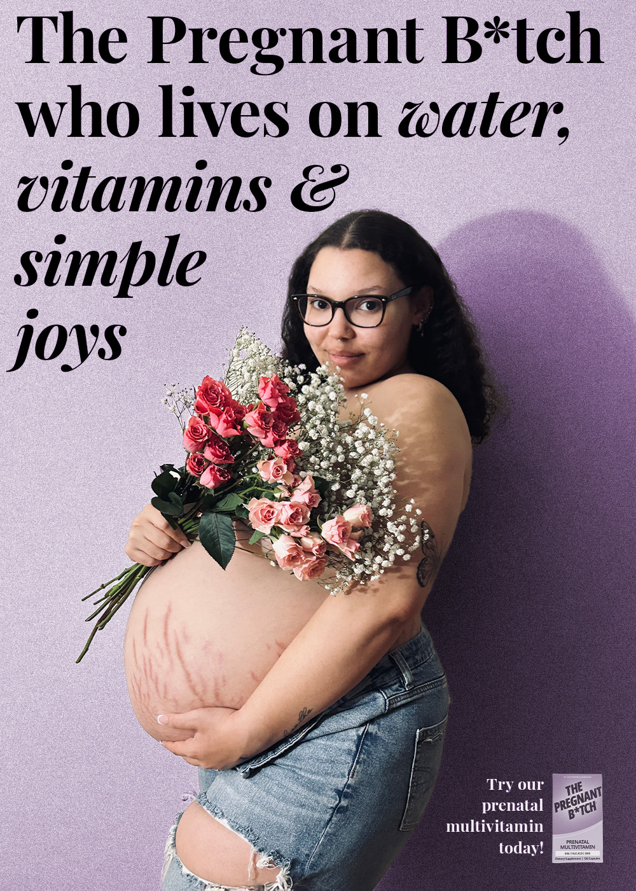
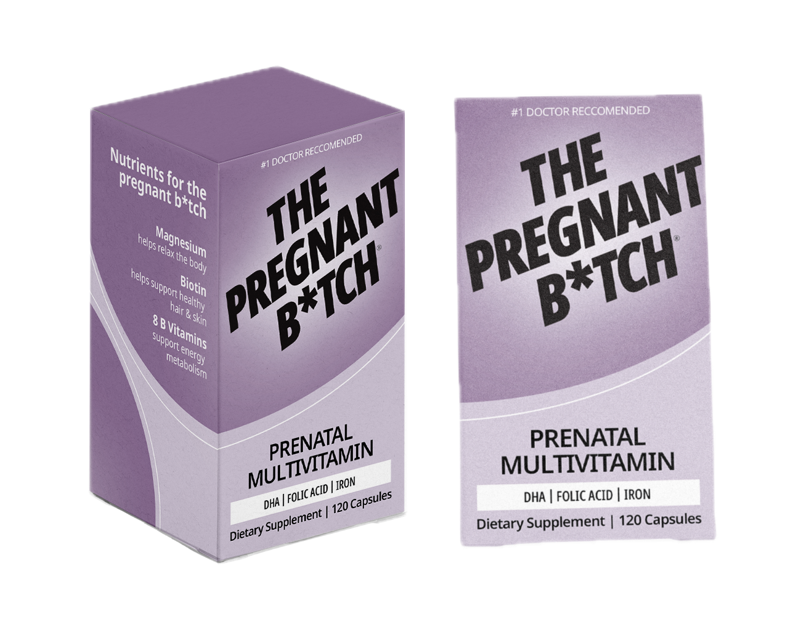
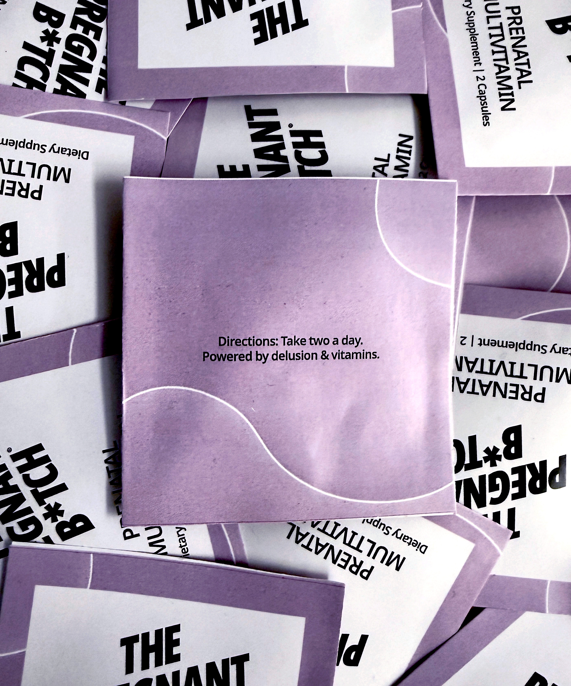
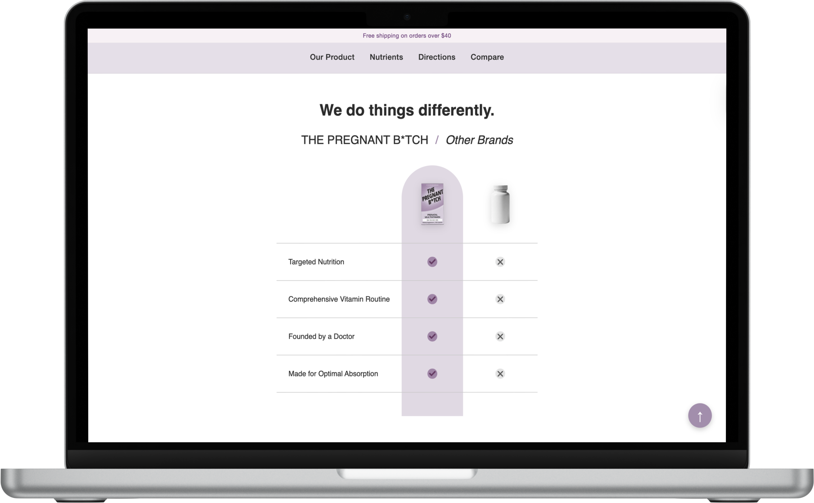

The Pregnant B✽tch
This project develops a visual identity and information system for communicating pregnancy and prenatal care resources. Through a series of printed materials, packaging, and a companion website, the project explores how design can organize complex health information into a clear and approachable system.

Concept
This project explores how design can be used to make complex health information more accessible. The goal was to create a clear and approachable visual system for communicating information related to pregnancy and prenatal care. Many people encounter overwhelming amounts of medical information during pregnancy, often presented in ways that are difficult to navigate or understand.
By organizing this information through thoughtful design, the project aims to create materials that feel supportive, direct, and easy to engage with. The visual identity was developed to function across multiple formats, allowing the system to expand from printed materials into packaging and digital platforms while maintaining consistency.
Process
The project began with a series of exploratory flyers that tested different approaches to visual communication. One flyer relied entirely on imagery while the other used only typography. These exercises helped explore tone, hierarchy, and the role of visual language in communicating information.

System Development
After the initial experiments, a visual map was created to organize how the information and resources connect within the larger system. This map helped structure the project conceptually and clarified how each component would function together.
From there, a design manual was developed to define the visual language of the project. The manual establishes typography, color, layout systems, and graphic elements that guide the identity across all materials.
Using this framework, the project expanded into a series of designed outcomes including a poster, a prenatal resource box, and a supplement packet that organizes information into a clear and accessible format. A companion website was also created to extend the system into a digital environment.

Design Manual
The design manual defines the visual language of the project, outlining typography, color, layout systems, and graphic elements used across all materials.
Final Result
The final project consists of a collection of designed materials that function together as a cohesive communication system. These include a poster introducing the visual identity, a prenatal care box designed to package helpful resources, and a supplement packet that organizes information in a clear and approachable format.
A companion website was also created to extend the system into a digital platform, allowing the information to be accessed and navigated online.
Together, these pieces demonstrate how a unified design system can translate across print, packaging, and digital environments while maintaining clarity, consistency, and accessibility.
Poster
The poster introduces the visual identity developed for the project. It highlights the typography, color palette, and graphic elements defined in the design manual while communicating the tone and voice of the brand. The poster acts as a large-scale entry point to the system, presenting the identity in a bold and direct format.

Prenatal Care Box
The prenatal care box was designed as a container for informational materials related to pregnancy and prenatal health. The packaging applies the visual system developed in the design manual, translating the brand identity into a physical object. The box functions as both packaging and a point of access to the resources included in the system.

Supplement Packet
The supplement packet organizes health information into a structured and readable format. Using the typography and layout system established in the design manual, the packet presents information in a way that is clear, approachable, and easy to navigate. It demonstrates how the visual system can support the communication of detailed information.

Website
The website extends the visual system into a digital environment. It translates the typography, layout structure, and graphic elements into an interactive format that allows the information to be accessed and explored online. The site demonstrates how the identity functions across digital platforms while maintaining consistency with the printed materials.
